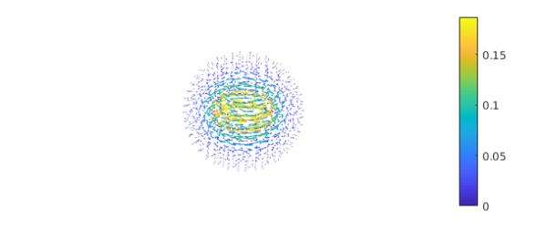
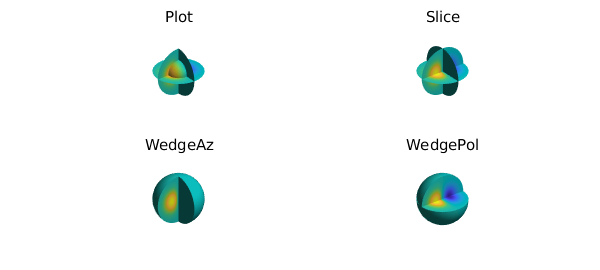
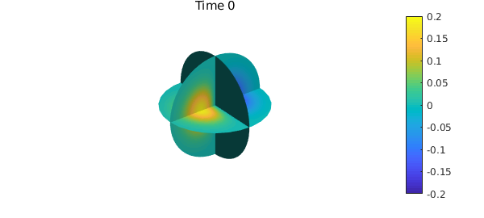
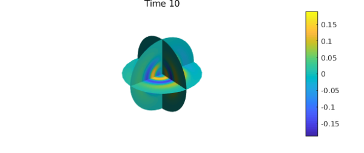
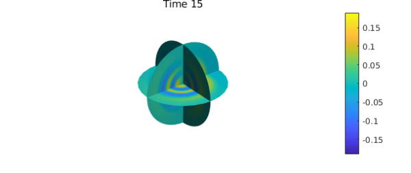

Introduction
In this example, we use the Helmholtz solver of Ballfun, available through the helmholtz command, to solve the advection-diffusion equation in the unit ball. We also use some of the vector calculus and visualization capabilities of Ballfun.
Advection-diffusion in the ball
The advection-diffusion equation in the ball is given by $$ \frac{\partial c}{\partial t}=D\nabla^2c-v\cdot\nabla c, $$ where $D$ is the diffusion coefficient and $v$ is a divergence-free vector field.
We choose $D=1/5000$ and $v = \nabla\times[ze^{-5(x^2+y^2+z^2)}(x,y,z)]$ to satisfy the no-slip condition $v\cdot \vec{n}=0$.
w = ballfunv( @(x,y,z) z.*exp(-5*(x.^2+y.^2+z.^2)).*x,...
@(x,y,z) z.*exp(-5*(x.^2+y.^2+z.^2)).*y,...
@(x,y,z) z.*exp(-5*(x.^2+y.^2+z.^2)).*z);
v = curl( w );
quiver(v, 4, 'numpts',30), axis('off'), colorbar

We verify that $v$ is divergence-free:
norm(div(v))
ans =
1.269097204341824e-17
The vector field $v$ also satisfies the no-slip boundary condition $v\cdot\vec{n}=0$, as shown by the following command:
vn = dot(v(1,:,:,'spherical'),spherefunv.unormal); norm(vn)
ans =
1.296776305849438e-33
Vizualisation of functions
We impose the initial condition $c = -xe^{-5(x^2+y^2+z^2)}$ to solve the advection-diffusion equation.
c = ballfun(@(x,y,z) -x.*exp(-5*(x.^2+y.^2+z.^2)));
The function $c$ can be vizualise using the different commands implemented in Ballfun;
subplot(2,2,1)
plot(c), caxis([-0.19 0.19]), axis off
title("Plot")
subplot(2,2,2)
slice(c), caxis([-0.19 0.19]), axis off
title("Slice")
subplot(2,2,3)
plot(c, 'WedgeAz'), caxis([-0.19 0.19]), axis off
title("WedgeAz")
subplot(2,2,4)
plot(c, 'WedgePol'), caxis([-0.19 0.19]), axis off
title("WedgePol")

Time discretization
The advection-diffusion equation is solved using the implicit-explicit order 1 backward differentiation time-stepping scheme (IMEX-BDF1). This yields a Helmholtz equation at each time step: $$ \nabla^2c^{n+1}+K^2c^{n+1}=K^2c^n+\frac{1}{D}v\cdot\nabla c^n,\quad \left.\frac{\partial c}{\partial \vec{n}}\right|_{\partial B(0,1)} = 0, $$ where $c_n$ denotes the solution at time $t = n\Delta t$, $\Delta t = 5\times 10^{-2}$ is the time step, and $K^2 = -1/(D\Delta t)$. This equation can be solved by using the Ballfun command helmholtz.
The following code solves the advection-diffusion numerically to time $t=15$ and plots the solution $c$ at different times.
D = 1/5000; % Diffusion constant
dt = 5e-2; % Time step
K = 1i*sqrt(1/(dt*D)); % Helmholtz frequency
T = 15; % Stopping time
nsteps = ceil(T/dt); % Number of time steps
m = 100; % Spatial discretization
for n = 0:nsteps
if mod(n,100) == 0
clf, slice(c), caxis([-0.19,0.19])
title(sprintf('Time %d',n*dt)), colorbar, axis('off'), snapnow
end
rhs = K^2*c+dot(v,grad(c))/D;
c = helmholtz(rhs, K, @(lam,th)0, m, 'neumann'); % Helmholtz solve
end


